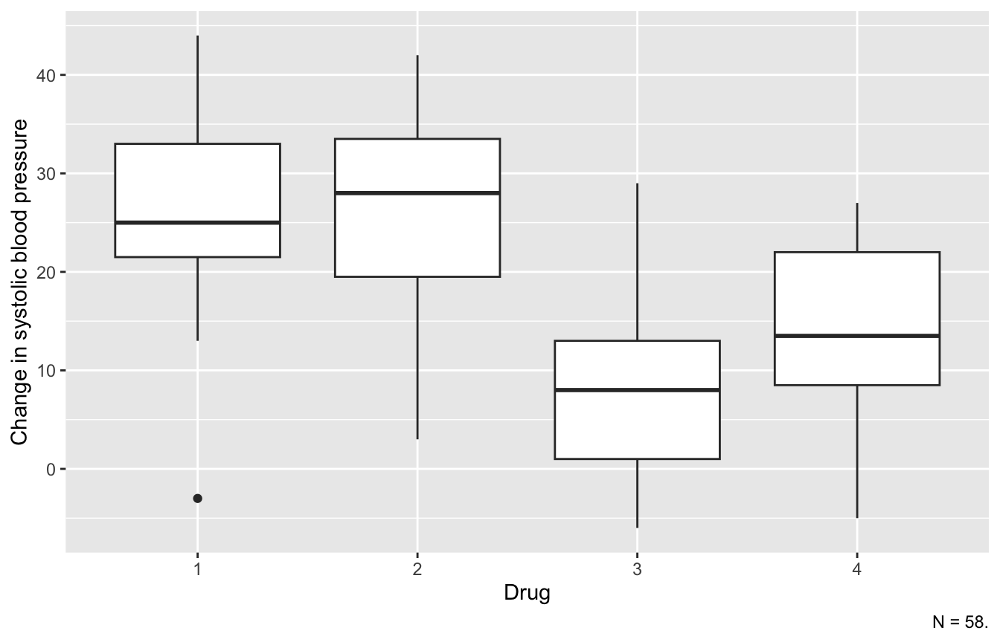
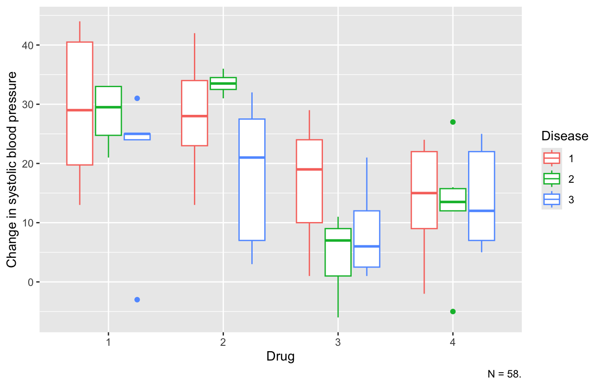
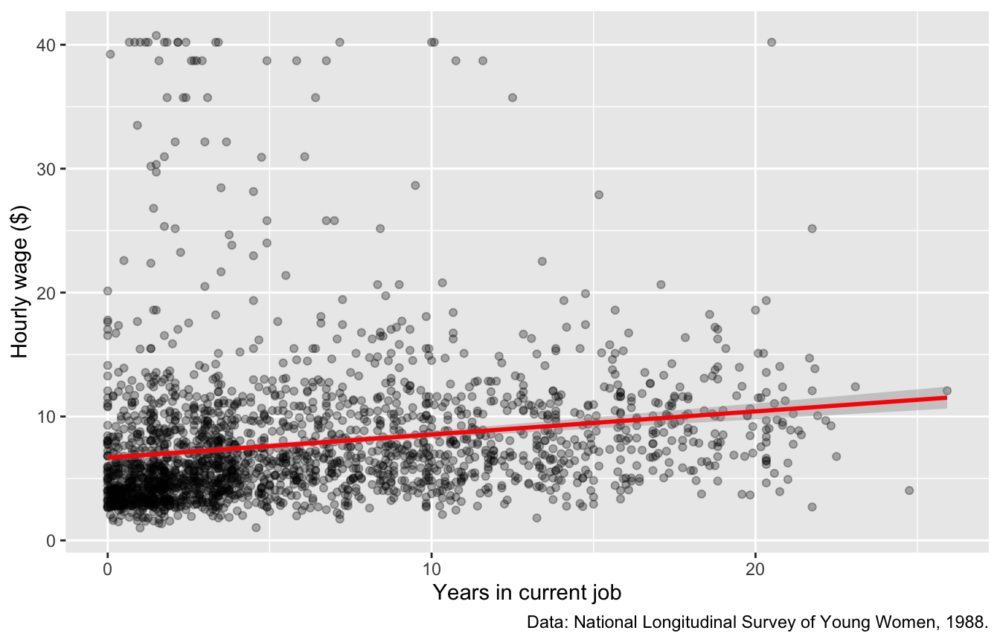

library(tidyverse)
library(haven)
library(effectsize)
library(modelsummary)2 Review of Regression and ANOVA
Nearly every method in this book extends one of two models you already know: analysis of variance (ANOVA) and multiple linear regression. This chapter reviews both in R so that later chapters can build on them. Along the way, it introduces a data-cleaning habit used throughout the book: never overwrite your raw data; create a clean copy instead.
2.1 ANOVA
2.1.1 The data
The systolic data come from a small clinical study of 58 patients. Each patient received one of four drugs and had one of three diseases. The outcome, systolic, is the change in systolic blood pressure.
systolic <- read_dta("data/systolic.dta")
glimpse(systolic)Rows: 58
Columns: 3
$ drug <dbl> 1, 1, 1, 1, 1, 1, 1, 1, 1, 1, 1, 1, 1, 1, 1, 2, 2, 2, 2, 2, 2…
$ disease <dbl> 1, 1, 1, 1, 1, 1, 2, 2, 2, 2, 3, 3, 3, 3, 3, 1, 1, 1, 1, 1, 2…
$ systolic <dbl> 42, 44, 36, 13, 19, 22, 33, 26, 33, 21, 31, -3, 25, 25, 24, 2…drug and disease are stored as numbers, but they are categories. mutate() creates new versions of them as factors so that R treats each value as a separate group. We save the result as a new data frame, systolic_clean, and leave the raw data untouched.
systolic_clean <- systolic |>
mutate(
drug = as_factor(drug),
disease = as_factor(disease)
)A boxplot shows how the outcome is distributed within each group:
ggplot(systolic_clean, aes(x = drug, y = systolic)) +
geom_boxplot() +
labs(
x = "Drug",
y = "Change in systolic blood pressure",
caption = "N = 58."
)
2.1.2 One-way ANOVA
Does the mean change in blood pressure differ across the four drugs?
anova1 <- aov(systolic ~ drug, data = systolic_clean)
summary(anova1) Df Sum Sq Mean Sq F value Pr(>F)
drug 3 3133 1044.4 9.086 5.75e-05 ***
Residuals 54 6207 114.9
---
Signif. codes: 0 '***' 0.001 '**' 0.01 '*' 0.05 '.' 0.1 ' ' 1The F test is significant, so at least one group mean differs from the others. The group means show where the differences lie:
systolic_clean |>
group_by(drug) |>
summarize(n = n(), mean = mean(systolic), sd = sd(systolic))2.1.3 Post-hoc tests
The omnibus F test does not say which groups differ. Post-hoc tests compare every pair of groups while controlling the familywise error rate. The Bonferroni and Tukey methods are two common choices:
pairwise.t.test(systolic_clean$systolic, systolic_clean$drug,
p.adjust.method = "bonferroni")
Pairwise comparisons using t tests with pooled SD
data: systolic_clean$systolic and systolic_clean$drug
1 2 3
2 1.00000 - -
3 0.00067 0.00102 -
4 0.01154 0.01726 1.00000
P value adjustment method: bonferroni TukeyHSD(anova1) Tukey multiple comparisons of means
95% family-wise confidence level
Fit: aov(formula = systolic ~ drug, data = systolic_clean)
$drug
diff lwr upr p adj
2-1 -0.5333333 -10.911001 9.844334 0.9990860
3-1 -17.3166667 -28.323846 -6.309488 0.0006259
4-1 -12.5666667 -22.780896 -2.352437 0.0100845
3-2 -16.7833333 -27.790512 -5.776154 0.0009486
4-2 -12.0333333 -22.247563 -1.819104 0.0148153
4-3 4.7500000 -6.103225 15.603225 0.65422692.1.4 Effect sizes
A p-value tells you whether an effect is likely to be zero, not how large it is. Eta squared is the proportion of outcome variance explained by group membership. Omega squared estimates the same quantity with less upward bias, which matters most in small samples like this one.
eta_squared(anova1, partial = FALSE)omega_squared(anova1, partial = FALSE)2.1.5 Two-way ANOVA
Next, add disease as a second factor, along with the drug × disease interaction. The interaction tests whether the effect of a drug depends on which disease the patient has. (Chapter 3 returns to interactions in detail.)
ggplot(systolic_clean, aes(x = drug, y = systolic, color = disease)) +
geom_boxplot() +
labs(
x = "Drug",
y = "Change in systolic blood pressure",
color = "Disease",
caption = "N = 58."
)
anova2 <- aov(systolic ~ drug * disease, data = systolic_clean)
summary(anova2) Df Sum Sq Mean Sq F value Pr(>F)
drug 3 3133 1044.4 9.456 5.58e-05 ***
disease 2 419 209.4 1.896 0.162
drug:disease 6 707 117.9 1.067 0.396
Residuals 46 5081 110.5
---
Signif. codes: 0 '***' 0.001 '**' 0.01 '*' 0.05 '.' 0.1 ' ' 1drug * disease is shorthand for drug + disease + drug:disease. Neither disease nor the interaction is significant: the drugs’ effects on blood pressure do not appear to depend on the patient’s disease. With more than one factor, report partial effect sizes. Each one gives the variance explained by that term, after removing the variance explained by the other terms.
omega_squared(anova2, partial = TRUE)2.2 Multiple linear regression
2.2.1 The data
The nlsw88 data come from the 1988 wave of the National Longitudinal Survey of Young Women. It follows 2,246 women who were 34 to 46 years old at the time. We will model hourly wage as a function of job tenure (years in the current job), age, years of schooling (grade), and marital status.
nlsw88 <- read_dta("data/nlsw88.dta")
nlsw_clean <- nlsw88 |>
select(wage, tenure, age, grade, married) |>
mutate(married = as_factor(married)) |>
drop_na()
glimpse(nlsw_clean)Rows: 2,229
Columns: 5
$ wage <dbl> 11.739125, 6.400963, 5.016723, 9.033813, 8.083731, 4.629630, 1…
$ tenure <dbl> 5.3333335, 5.2500000, 1.2500000, 1.7500000, 17.7500000, 2.2500…
$ age <dbl> 37, 37, 42, 43, 42, 39, 37, 40, 40, 40, 39, 40, 40, 40, 39, 41…
$ grade <dbl> 12, 12, 12, 17, 12, 12, 12, 18, 14, 15, 16, 15, 15, 15, 15, 15…
$ married <fct> single, single, single, married, married, married, single, mar…drop_na() removes the 17 women missing tenure or schooling, so every model below is fit to the same sample. Comparing models fit to different samples can be misleading. (Chapter 7 covers better ways to handle missing data.)
2.2.2 Simple linear regression
Start with a scatterplot. The line added by geom_smooth(method = "lm") is the fitted regression line for the model we are about to estimate.
ggplot(nlsw_clean, aes(x = tenure, y = wage)) +
geom_point(alpha = 0.3) +
geom_smooth(method = "lm", color = "red") +
labs(
x = "Years in current job",
y = "Hourly wage ($)",
caption = "Data: National Longitudinal Survey of Young Women, 1988."
)
model1 <- lm(wage ~ tenure, data = nlsw_clean)
summary(model1)
Call:
lm(formula = wage ~ tenure, data = nlsw_clean)
Residuals:
Min 1Q Median 3Q Max
-8.043 -3.188 -1.471 1.446 33.787
Coefficients:
Estimate Std. Error t value Pr(>|t|)
(Intercept) 6.67973 0.17732 37.670 <2e-16 ***
tenure 0.18670 0.02183 8.551 <2e-16 ***
---
Signif. codes: 0 '***' 0.001 '**' 0.01 '*' 0.05 '.' 0.1 ' ' 1
Residual standard error: 5.675 on 2227 degrees of freedom
Multiple R-squared: 0.03179, Adjusted R-squared: 0.03136
F-statistic: 73.12 on 1 and 2227 DF, p-value: < 2.2e-16Each additional year of tenure predicts an hourly wage about 19 cents higher.
2.2.3 Adding predictors
model2 <- lm(wage ~ tenure + age + grade + married, data = nlsw_clean)
summary(model2)
Call:
lm(formula = wage ~ tenure + age + grade + married, data = nlsw_clean)
Residuals:
Min 1Q Median 3Q Max
-10.921 -2.726 -1.084 1.040 35.362
Coefficients:
Estimate Std. Error t value Pr(>|t|)
(Intercept) 0.78784 1.60824 0.490 0.6243
tenure 0.14849 0.02097 7.082 1.9e-12 ***
age -0.07066 0.03742 -1.888 0.0591 .
grade 0.70217 0.04561 15.393 < 2e-16 ***
marriedmarried -0.48747 0.23828 -2.046 0.0409 *
---
Signif. codes: 0 '***' 0.001 '**' 0.01 '*' 0.05 '.' 0.1 ' ' 1
Residual standard error: 5.388 on 2224 degrees of freedom
Multiple R-squared: 0.1284, Adjusted R-squared: 0.1268
F-statistic: 81.92 on 4 and 2224 DF, p-value: < 2.2e-16Each coefficient is now a partial effect: the predicted change in wage for a one-unit change in that predictor, with the other predictors held constant. The coefficient for marriedmarried compares married women to single women (the reference group) after adjusting for the other predictors.
2.2.4 Standardized coefficients
Standardized (beta) coefficients put continuous predictors on the same scale (standard deviations). This makes it easier to compare the predictors’ relative strength.
standardize_parameters(model2)2.2.5 Summarizing models in a table
modelsummary() puts several models side by side, which is the usual way to report nested regression models:
modelsummary(
list("Model 1" = model1, "Model 2" = model2),
stars = TRUE,
gof_map = c("nobs", "r.squared", "adj.r.squared")
)| Model 1 | Model 2 | |
|---|---|---|
| + p < 0.1, * p < 0.05, ** p < 0.01, *** p < 0.001 | ||
| (Intercept) | 6.680*** | 0.788 |
| (0.177) | (1.608) | |
| tenure | 0.187*** | 0.148*** |
| (0.022) | (0.021) | |
| age | -0.071+ | |
| (0.037) | ||
| grade | 0.702*** | |
| (0.046) | ||
| marriedmarried | -0.487* | |
| (0.238) | ||
| Num.Obs. | 2229 | 2229 |
| R2 | 0.032 | 0.128 |
| R2 Adj. | 0.031 | 0.127 |
The R² rises from Model 1 to Model 2, so schooling, age, and marital status explain wage variance beyond what tenure explains alone.